This document records the cleaning standard observed last weekend across the kitchen, powder room, balcony, air fryer and shared items. It sets the expected standard going forward and should be read by all residents.
📅 Observed: weekend of 13 June 2026📍 Shared apartment – all common areas👥 All residents
Issues Found Last Weekend
🍳 Dirty kitchen sink & benches🥘 Unwashed pans with food residue🍞 Food, crumbs and rubbish on floor🗑️ Food containers & rubbish left out🔥 Oven splatters not cleaned🍟 Greasy air fryer not cleaned🧽 Damp, greasy cloths left on bench🚿 Neglected powder room🚽 Toilet smell — needs proper clean🌿 Dirty balcony, debris not swept🧊 Fridge fingerprints & streaks🧺 Stale tea towel — wash & store🧻 Paper towel left crumpled
📋
What Was Found – Overview
A summary of the condition of shared spaces last weekend
The shared areas of the apartment were found in an unacceptable state last weekend. The kitchen, sink, cookware, floor, air fryer, balcony, powder room and shared cleaning items all showed clear signs of having been left dirty after use.
Additionally, there is a persistent toilet smell noticeable on entering the apartment since the party. The powder room toilet has been cleaned but the smell is still present — it is coming from the main bathroom toilet, which needs a proper deep clean (see the Toilet section below).
This is a shared apartment. Every resident is responsible for leaving shared spaces clean — not just passable — after each use. Cleaning cannot be deferred until it accumulates into a large job, and it is not fair or reasonable for one person to repeatedly clean up avoidable mess left by others.
⚠️ Core Expectation
Every shared space must be returned to the same or better condition than it was found in. This is non-negotiable.
General Failures Observed
Food scraps, grease and crumbs left in the kitchen after cooking.
Food, crumbs and debris on the herringbone timber floor — not cleaned up after eating.
Dirty cutlery and pans left in or near the sink without being washed.
Damp and greasy cleaning cloths left on the bench rather than washed.
Dirty appliances not cleaned after use (air fryer).
Powder room left without adequate cleaning between uses.
Balcony not swept — plant debris left to accumulate.
Rubbish and food containers left on surfaces instead of being placed in the bin.
Paper towel left crumpled and untidy on the bench instead of stored neatly.
Crumbs and food residue left on benches — wipe down after every use.
🍳
Kitchen – Condition Observed
Sink, benches, floor and cookware
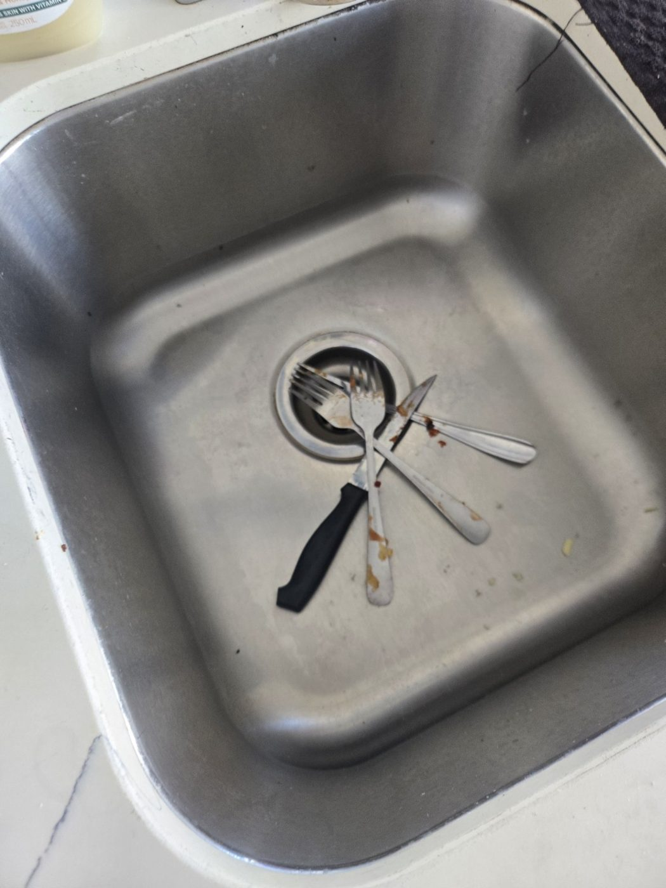
Dirty cutlery in sink
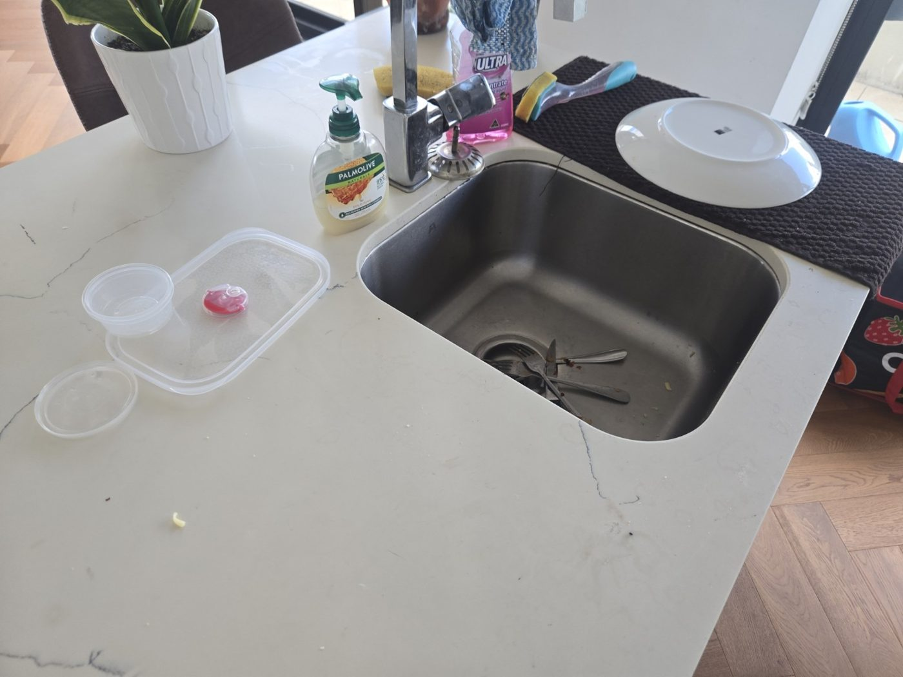
Food residue on bench
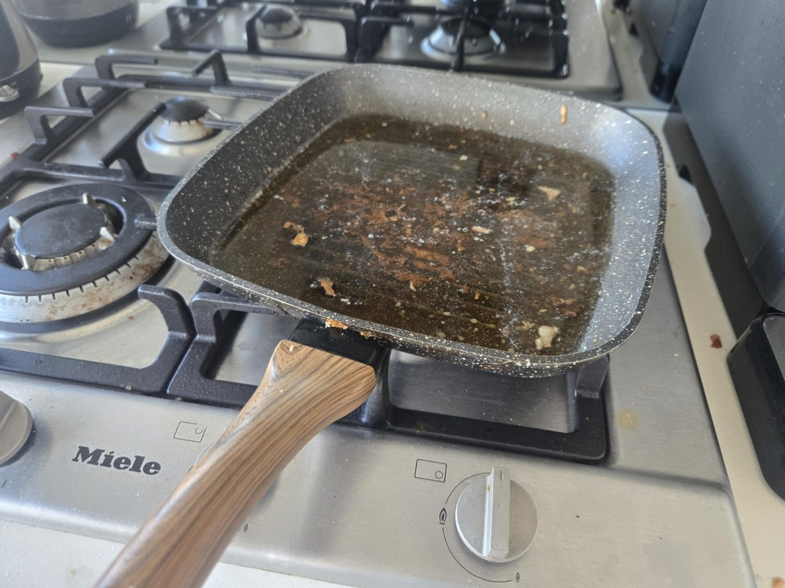
Bench and sink area
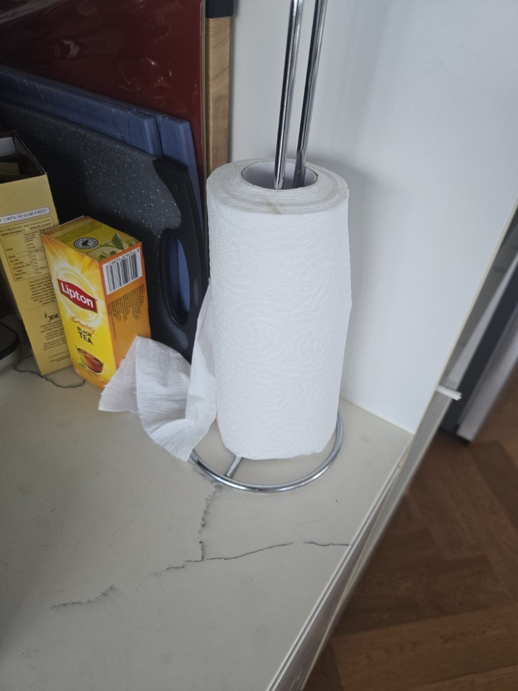
Grease and food on floor
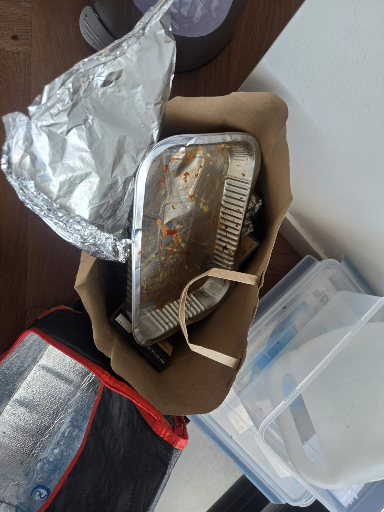
Used pans left out
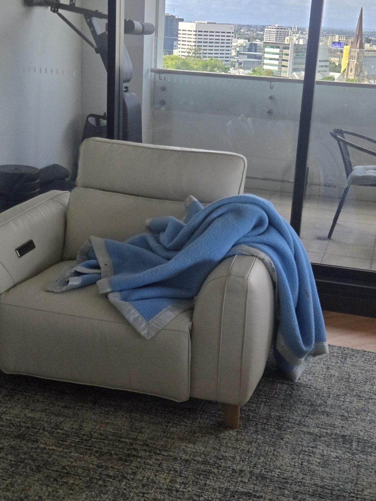
Food containers not disposed of
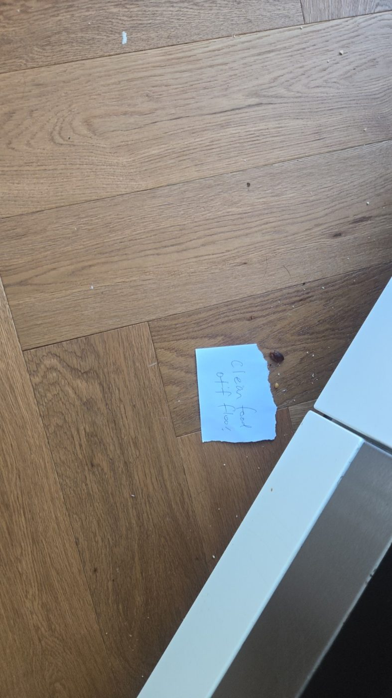
Dirty paper towels and rubbish
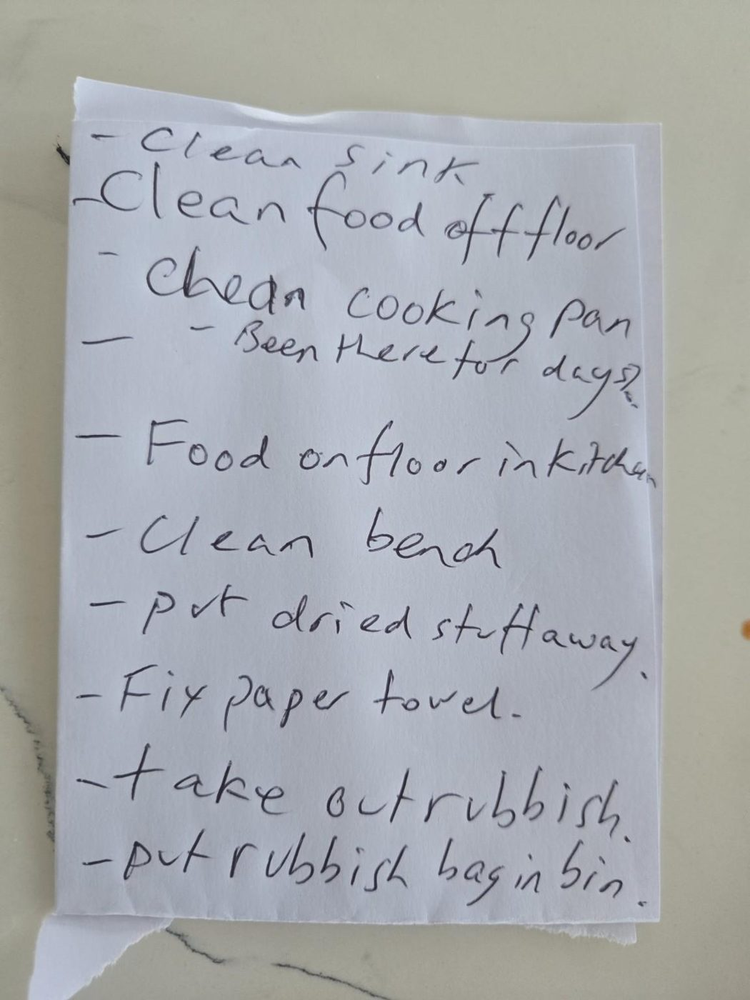
Overall kitchen state
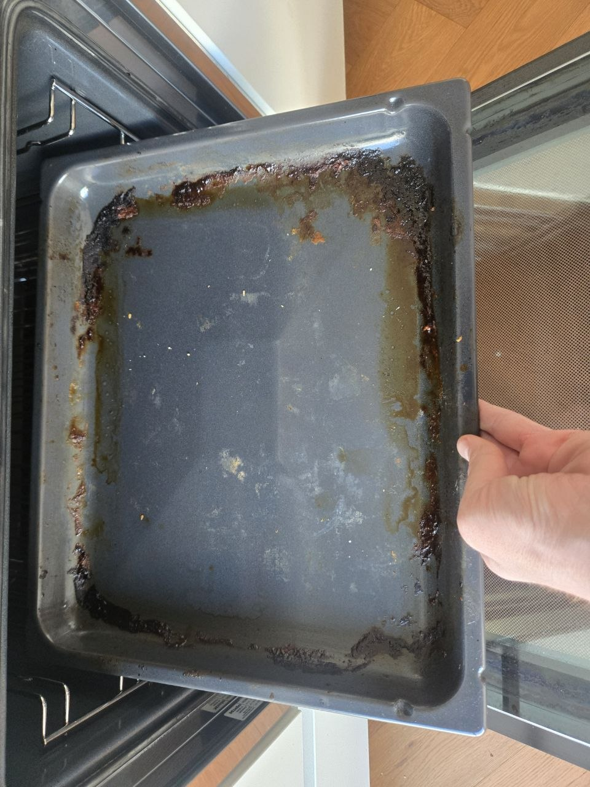
Baking tray — baked-on grease and food residue
❌ What Was Found
Dirty cutlery left sitting in the sink
Food residue on benches and splashback
Grease and crumbs on the floor
Pans left with food and grease — not washed
Baking tray with baked-on grease and food residue — not cleaned after use
Food containers and rubbish left on surfaces
Crumbs and food residue left on benches — wipe down after every use
Food, crumbs and debris on the herringbone timber floor — not cleaned up
Paper towel left crumpled and untidy on the bench instead of stored neatly
✅ What Is Expected
Cutlery washed, dried and returned to drawer
Benches wiped clean after every meal or cooking session
Floor checked for crumbs and spot-cleaned — no food left on the herringbone timber floor
Pans washed promptly after cooking
Baking trays soaked and scrubbed clean after every use — no baked-on residue left
All rubbish placed in the bin immediately
Surfaces left dry and clear
🔁 Rule – Clean As You Go
After cooking, eating or washing up: wipe down the bench, check the floor for crumbs, wash or stack dirty items, and put rubbish in the bin. Do this before leaving the kitchen.
🔥
Miele Oven – Splatters and Residue
Built-in electric oven — clean after heavy use
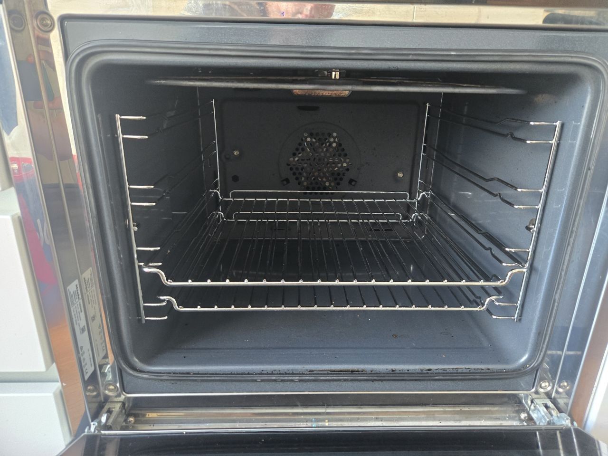
Grease splatters and residue inside Miele oven
The Miele oven interior showed grease splatters, minor food residue on the side walls and floor, and accumulated dust around the back fan vent and light fixture. Racks had minor discolouration from use.
⚠️ Required Action
Wipe down the oven interior after use — especially after cooking fatty or splattering foods. Do not leave baked-on residue for the next person.
How to Clean the Miele Oven
Let the oven cool completely before attempting to clean.
Remove racks and side supports — pull out wire racks. Soak in warm soapy water if heavily soiled.
Wipe loose debris — use a damp microfibre cloth to remove crumbs and loose residue from the floor and walls.
Apply oven cleaner — spray oven cleaner onto a cloth or sponge (not directly onto the fan). Apply to interior walls, floor and ceiling. Avoid the rear fan vent and light fixture.
Let it sit per product instructions (typically 5–10 minutes). Do not use oven cleaner on the glass door — use a mild degreaser or baking soda paste instead.
Wipe clean — use a damp cloth to remove all cleaner residue. Repeat with fresh water until no residue remains.
Clean the racks — scrub with a non-abrasive sponge or scourer, rinse and dry before sliding back into the oven.
Wipe the door glass — use a glass cleaner or a baking soda paste on stubborn baked-on splatters. Buff dry with a clean cloth.
Wipe the exterior — stainless steel surfaces with stainless steel cleaner or a damp microfibre cloth, following the grain. Do not use steel wool or abrasive pads.
⚠️ Miele-Specific Notes
Do not spray cleaner directly onto the rear fan — spray onto a cloth first.
Do not use steam cleaners inside the oven — can damage electronics.
Do not use abrasive scouring pads on the interior enamel or glass door.
If the oven has a pyrolytic self-clean cycle, refer to the manual before using — it runs at very high temperatures.
Wipe the door seal/gasket gently — it can tear if scrubbed aggressively.
🍟
Air Fryer – Grease Build-Up
DeLonghi Ideal Fry – requires cleaning after every use
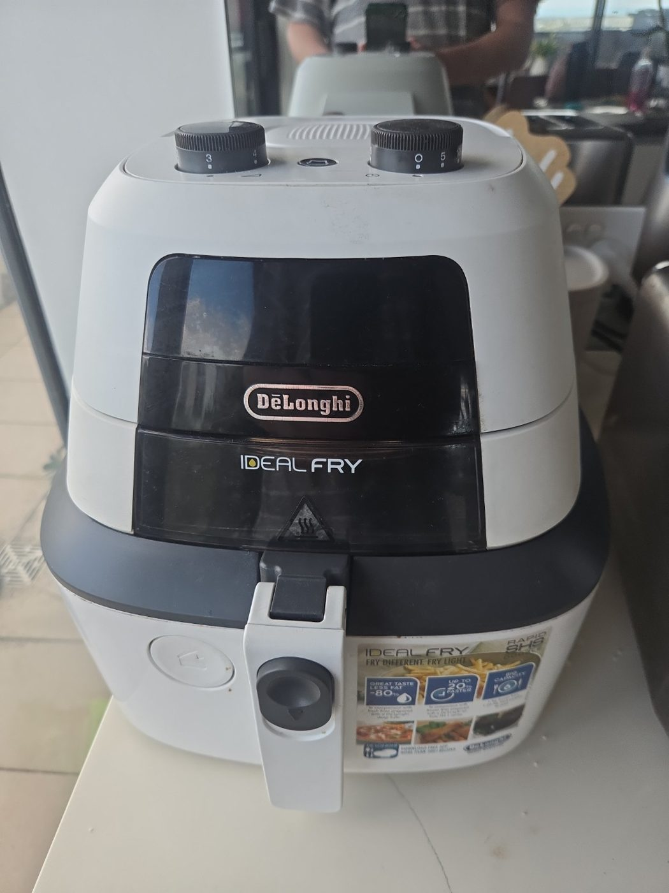
Exterior grease residue
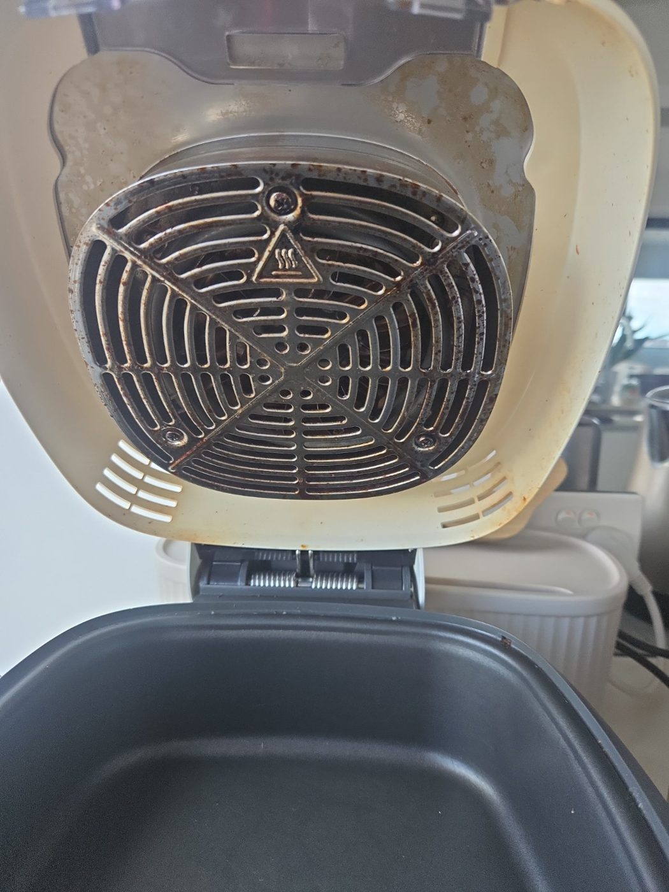
Basket build-up
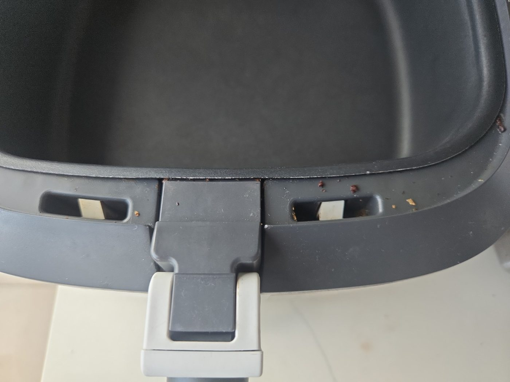
Interior walls
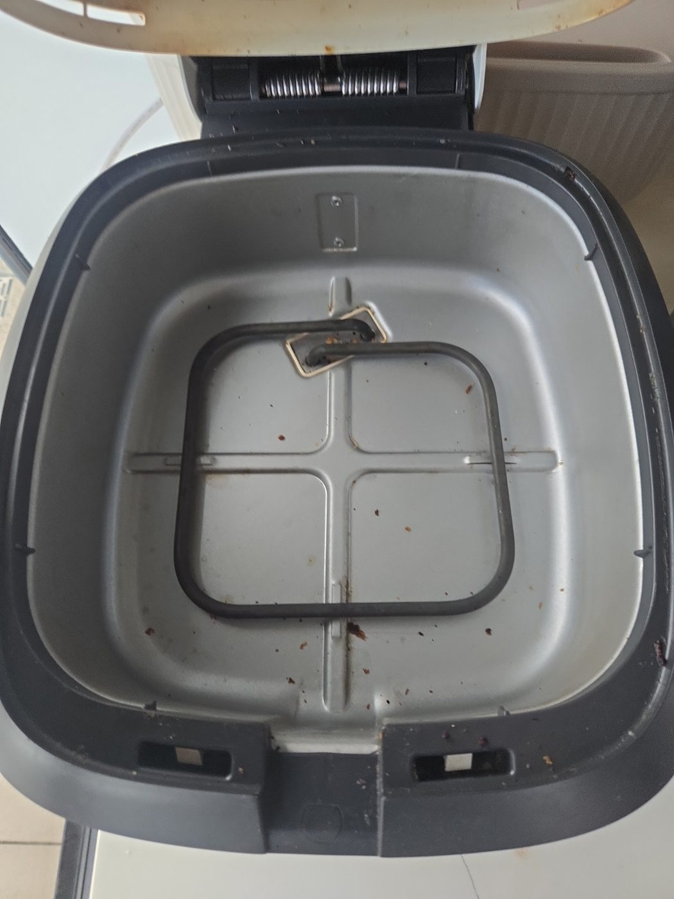
Components with residue
The air fryer was found with accumulated grease and food residue on the basket, interior walls and surrounding components. This build-up indicates it was used multiple times without being cleaned between or after use.
⚠️ Required Action
The air fryer must be cleaned after every use — including after cooking greasy foods. Do not leave it for the next person.
How to Clean It (After Greasy or Heavy Use)
Unplug and allow to cool fully before touching any components.
Remove all removable parts — basket, tray and any inserts.
Wash with hot water and dishwashing liquid using a non-abrasive sponge.
Clean the basket edges, lid surround, heating element area and interior walls.
Dry all parts thoroughly before reassembling and storing.
🧽
Cleaning Cloths – Left Damp and Greasy
Cloths must be washed — not left on the bench
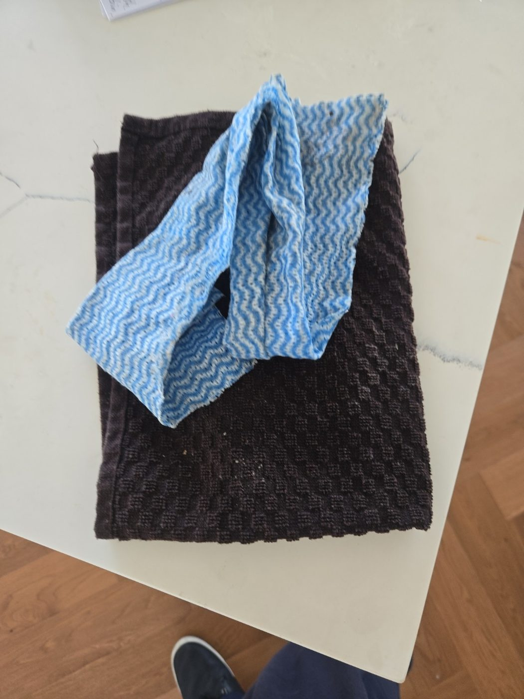
Damp and greasy cloths left on bench
Cleaning cloths were found damp and greasy, left screwed up on the bench. This is unhygienic and leaves the shared space in a worse condition than before they were used.
❌ What Was Found
Damp cloths left balled up on the bench
Greasy cloths not washed after use
Cloths left in the sink area
✅ What Is Required
Greasy cloths washed promptly on a warm cycle (40–60°C)
Cloths returned to storage only when fully dry
Never left screwed up, damp or greasy on any surface
🚿
Powder Room – Neglected Condition
Shared bathroom – shared responsibility
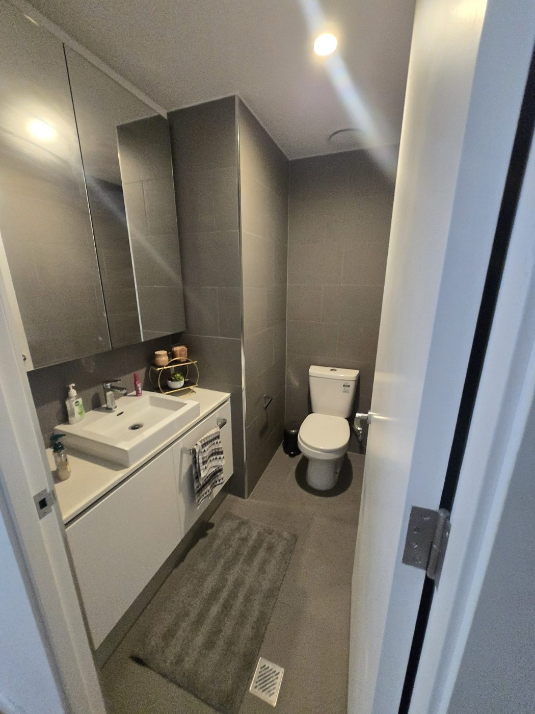
Powder room – state observed
The powder room was found in a poor state. As a shared bathroom used by all residents and any visitors, it should be cleaned lightly after each use and thoroughly on a weekly basis.
⚠️ Not Acceptable
The powder room should never be allowed to reach this level of neglect. It is a shared responsibility — not one person's job.
After Every Single Use
Rinse toothpaste, soap residue and hair from the basin immediately.
Check the toilet bowl — use the brush if needed before leaving.
Hang towels neatly on the rail — never leave them on the floor.
Place any rubbish in the bin.
Weekly Clean Required
Clear all surfaces.
Clean vanity and basin with appropriate cleaner.
Wipe the mirror with glass cleaner.
Clean the toilet — seat, lid, cistern, exterior bowl, flush button and base.
Scrub the bowl with the toilet brush.
Disinfect the toilet brush holder.
Empty the bin, replace the liner, spray with Glen 20 if needed.
Vacuum then mop the floor including around and behind the toilet.
Check the floor drain for hair and dirt.
Wipe light switches, door handle and cupboard fronts.
🚽
Main Bathroom Toilet – Persistent Smell
Toilet odour noticeable on entering the apartment since the party
There is a persistent toilet smell on entering the apartment. The powder room toilet has been cleaned but the smell remains — it is coming from the main bathroom toilet.
⚠️ Not Acceptable
A recurring toilet smell in the common area is not acceptable. This must be resolved with a thorough deep clean immediately.
Evidence
The following issues were observed on inspection (Stylus brand toilet, dual flush 4.5L/3.0L):
Toilet bowl contains discoloured water that has not been flushed — indicates the toilet was used and left.
Visible grime and dark specks on the bowl rim and interior surfaces above the water line.
Dirt and dust accumulated around the hinge mechanism — seat/lid attachment points have yellowish grime build-up.
Dust and smudges on the flush button and cistern top.
Dirt and debris on the floor around the toilet base, including in the wall-floor junction.
Deep Clean — Step by Step
This is a full deep clean, not a quick wipe. Expect 20–30 minutes.
Clear the area. Remove everything from the cistern top. Move the bin, brush holder and any items from around the toilet base.
Apply toilet cleaner. Squirt a thick ring of toilet cleaner (Domestos or similar bleach-based) around the inside of the bowl, under the rim. Let it sit for 5–10 minutes. Do not flush.
Clean flush button and cistern top. Wipe the flush button and entire cistern top with Pine O Cleen spray on a microfibre cloth. Pay attention to the crevice around the button.
Remove seat and lid. Stylus toilets typically have quick-release hinges — press the release buttons on the hinges and lift the seat/lid assembly off the bowl. If unable to remove, hinge areas must be cleaned with a small brush.
Clean seat, lid and hinges. Scrub the underside of the seat and lid, all hinge components and the hinge mounting points on the bowl. Use a small brush or old toothbrush to get into crevices. Wipe down with Pine O Cleen.
Scrub the bowl. Use the toilet brush to scrub the entire interior — under the rim, around the water line, and deep into the trap. Flush. Repeat if water is still discoloured.
Clean the exterior. Wipe the entire exterior of the bowl — cistern, sides, front, back, and the pedestal base. Use Pine O Cleen on the ceramic and a damp cloth for general dust.
Disinfect the brush holder. Pour a small amount of bleach or toilet cleaner into the brush holder, swirl, and let sit for 5 minutes. Rinse thoroughly.
Mop the floor. Move the toilet brush holder and bin. Vacuum then mop the floor around and behind the toilet with Pine O Cleen.
Reassemble. Reattach the seat and lid. Return the bin and brush holder. Restock toilet paper.
🔁 Daily Maintenance — Every Use
Flush the toilet after every use. Do not leave the bowl unflushed.
Use the toilet brush if there are any marks in the bowl — brush, then flush.
Close the lid before flushing to prevent aerosol spray.
Check the floor for splashes or drips — wipe immediately.
💡 Preventing Toilet Odours
Toilet smells are usually caused by:
• Urine or waste left in the bowl — flush after every use.
• Dirt trapped under the seat rim or around hinges — lift the seat and clean the hinge area weekly.
• Splashes on the floor, pedestal or wall — check and wipe after every use.
• The toilet brush not being rinsed — rinse the brush after use and let it drip dry into the holder.
🧺
Tea Towel – Keep One, Keep It Clean and Neat
Only one tea towel in use — wash when dirty, store neatly
Multiple damp or stale tea towels were left around the kitchen. The household should maintain one clean tea towel in rotation.
❌ What Was Found
Multiple tea towels left damp and crumpled
Stale or sour-smelling towels left on the bench
Towels draped over the oven handle looking untidy
✅ What Is Required
Keep one tea towel in use at a time
Wash it when it becomes dirty or damp
Store it neatly — folded on the rail or drawer, not crumpled on the bench or hanging untidily
Replace with a fresh towel when the current one is in the wash
🌿
Balcony – Plant Debris and Neglect
Balcony cleanliness is a shared responsibility
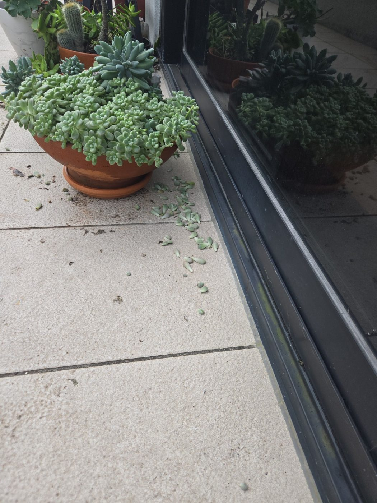
Debris accumulation
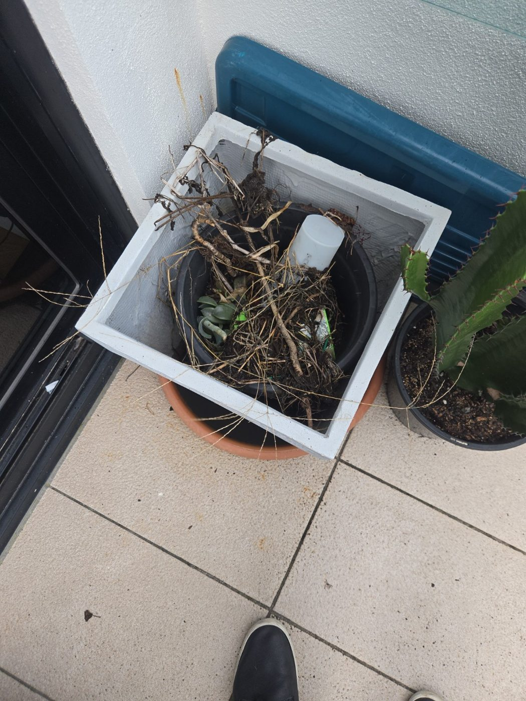
Door threshold
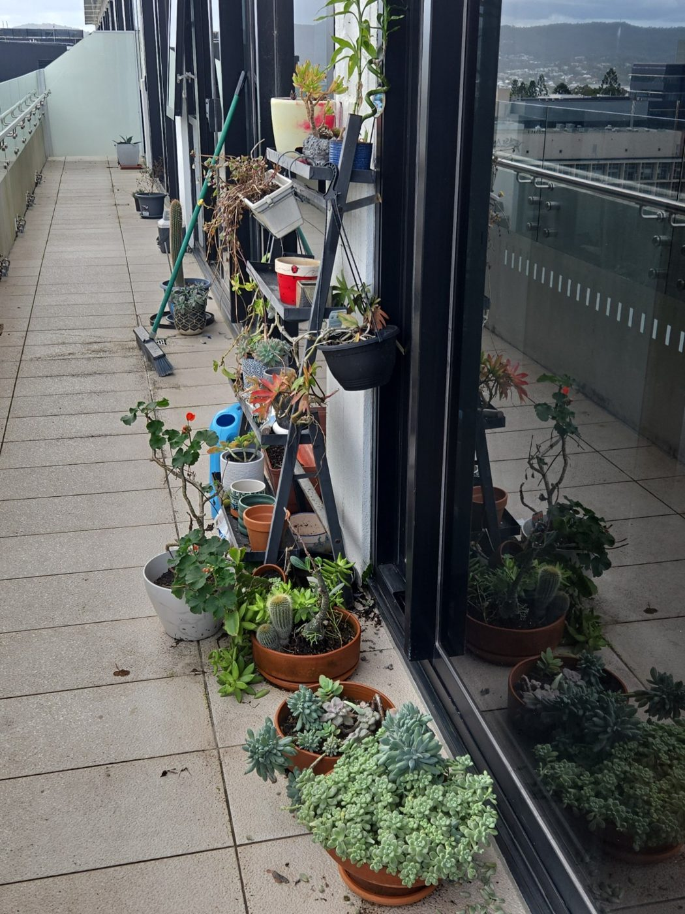
Tile area
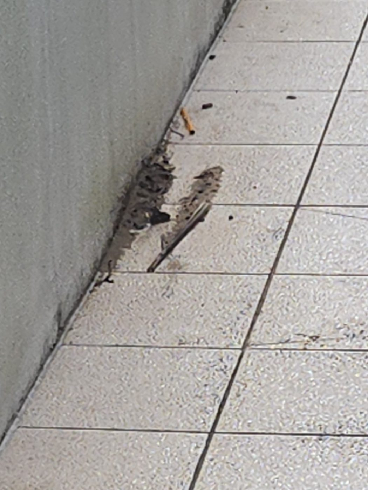
Plant area
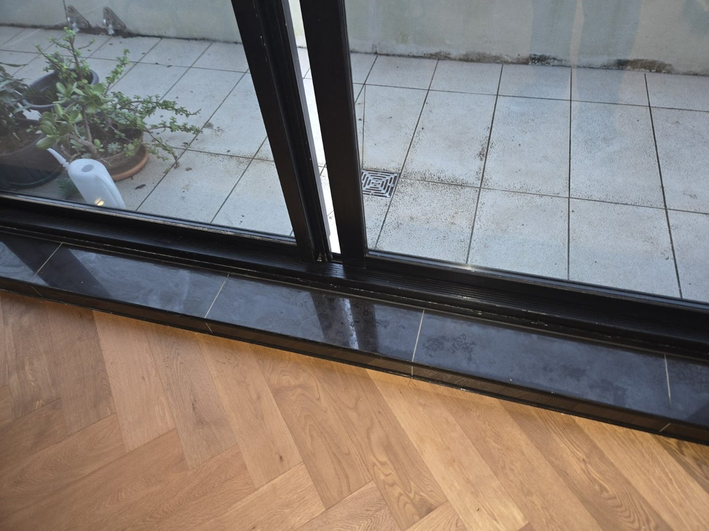
Balcony edge
The balcony had accumulated plant debris, soil and loose dirt that had not been swept or cleared. Do not just sweep debris to the side — use a dustpan and broom, collect it all, and empty it into the bin. The door track area also showed built-up grime.
Note
Do not scrub or pressure-clean the existing tiles — they are scheduled for replacement. The immediate need is regular sweeping and keeping the area free of loose debris.
Required – Ongoing Maintenance
Sweep plant debris, leaves, soil and dirt regularly using a dustpan and broom.
Place all swept debris into a garbage bag — do not leave it in piles.
Do not sweep debris over the balcony edge.
Do not bring wet or leaking plant waste through the apartment — drain pots over the balcony first.
Keep the balcony door tracks and black threshold free of grime and leaves.
🧊
Fridge – Fingerprints and Streaks
Stainless steel exterior needs a proper clean
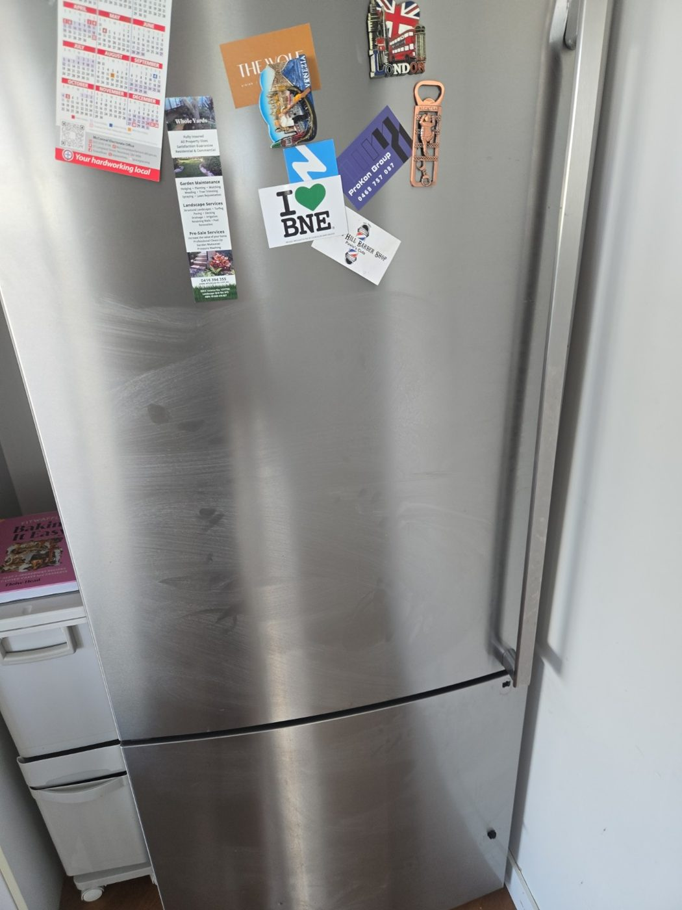
Fingerprints and water marks on fridge
The stainless steel fridge exterior has visible fingerprints, water marks and streaks. Stainless steel cleaner or wipes are needed — these are currently on the shopping list to purchase.
To Do
Purchase stainless steel cleaner or wipes. Spray onto a cloth (not directly onto the fridge), wipe with the grain, and buff dry with a clean microfibre cloth. Do not use abrasive pads, steel wool or bleach.
The Required Standard – Going Forward
This document has been written to make the expectations clear. The apartment is a shared home and everyone has an equal responsibility to maintain it.
Clean up immediately after cooking, eating, washing up or using an appliance.
Do not leave food scraps, dirty cutlery, greasy pans, damp cloths or rubbish for someone else to deal with.
Use the correct cleaning product for each surface — see the instruction manual.
If something spills, leaks, stains or gets greasy, clean it immediately.
Return every item to its correct location after use.
Expected standard: clean · dry · tidy · presentable · ready for the next person.
✅
What Needs to Happen Now
Immediate actions required from all residents
Area
Action Required
By
Kitchen
Clean immediately after every use — bench, sink, floor, appliances. Keep benches free of crumbs and paper towel stored neatly
All residents, ongoing
Miele oven
Wipe interior after use — especially after fatty or splattering foods. Refer to cleaning steps above
After every heavy use
Air fryer
Clean thoroughly now, then after every use going forward
Immediately
Cleaning cloths
Wash the greasy cloths; return only when dry
Immediately
Tea towel
Keep one clean tea towel in rotation — wash when dirty, store neatly folded
Immediately
Powder room
Full clean this week; then maintain daily and weekly
This week
Main bathroom toilet
Full deep clean — follow the 10-step process above. Flush after every use going forward
Immediately
Balcony
Sweep with dustpan and broom — collect all debris and empty into bin
This week
Fridge
Purchase stainless steel cleaner; clean exterior
On next shop
📖 Reference
Full instructions for every appliance, cleaning product and shared area are in the companion Apartment Instruction Manual. Refer to it if you are unsure how to clean something or which product to use.